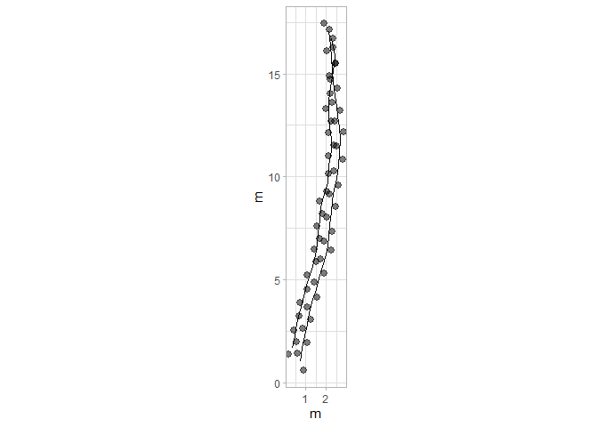

Studying fossil vertebrate trackways is crucial as they provide valuable insights into the behavior, locomotion, and environmental interactions of extinct species, offering a dynamic perspective on prehistoric life that skeletal remains alone cannot. Here, I present QuAnTeTrack, an integrated tool designed to semi-automatically extract palaeobiological information by digitizing footprint and trackway coordinates and analyzing them within the R environment.
QuAnTeTrack includes functions to read footprint coordinates and trackways stored as .TPS files, transforming them into “track” objects. These objects can be used to calculate and plot key parameters such as turning angles, trackway distances, step lengths, sinuosity, and straightness. Additional functions enable the quantification of velocity and the testing of scenarios involving acceleration, deceleration, or stable velocity, as well as comparing velocity differences between tracks.
The tool also supports visualizing movement patterns, plotting tracks according to velocity. Furthermore, QuAnTeTrack facilitates the testing of hypotheses related to gregarious behavior or predatory events. For interactions involving multiple tetrapods, such as group movement or predation, trackways are expected to covary more significantly and present fewer intersections than those generated by independent events. QuAnTeTrack estimates this by computing Frechet and Dynamic Time Warping (DTW) trajectory similarity metrics and quantifying track intersections. These metrics are evaluated through random simulation procedures to determine how actual trackway similarities differ from randomly generated ones under various scenarios, including geographical constraints and resource directionality.
Installation
You can install the development version of QuAnTeTrack from GitHub with:
# install.packages("devtools")
devtools::install_github("MacroFunUV/QuAnTeTrack")Usage
Example 1: Paluxy River Dataset
#> $Trajectories
#> $Trajectories$Track_1
#> x y IMAGE ID time displacementTime
#> 1 0.7554198 1.026763 Sauropod.png 0 0.00 0.00
#> 2 0.8313959 1.680158 Sauropod.png 0 0.02 0.02
#> 3 0.9703237 2.292308 Sauropod.png 0 0.04 0.04
#> 4 1.0680073 2.850190 Sauropod.png 0 0.06 0.06
#> 5 1.1656909 3.375511 Sauropod.png 0 0.08 0.08
#> 6 1.3176431 3.929051 Sauropod.png 0 0.10 0.10
#> 7 1.4934736 4.532519 Sauropod.png 0 0.12 0.12
#> 8 1.6606211 5.112108 Sauropod.png 0 0.14 0.14
#> 9 1.8234271 5.663478 Sauropod.png 0 0.16 0.16
#> 10 1.9970868 6.219189 Sauropod.png 0 0.18 0.18
#> 11 2.0795751 6.655509 Sauropod.png 0 0.20 0.20
#> 12 2.1012826 7.120049 Sauropod.png 0 0.22 0.22
#> 13 2.1642343 7.701809 Sauropod.png 0 0.24 0.24
#> 14 2.2402104 8.290081 Sauropod.png 0 0.26 0.26
#> 15 2.3009913 8.854475 Sauropod.png 0 0.28 0.28
#> 16 2.3747967 9.384137 Sauropod.png 0 0.30 0.30
#> 17 2.4898462 9.933336 Sauropod.png 0 0.32 0.32
#> 18 2.5983836 10.543316 Sauropod.png 0 0.34 0.34
#> 19 2.6548230 11.146783 Sauropod.png 0 0.36 0.36
#> 20 2.6743597 11.824056 Sauropod.png 0 0.38 0.38
#> 21 2.6396277 12.429694 Sauropod.png 0 0.40 0.40
#> 22 2.5636516 12.955015 Sauropod.png 0 0.42 0.42
#> 23 2.4985292 13.417384 Sauropod.png 0 0.44 0.44
#> 24 2.4268946 13.949217 Sauropod.png 0 0.46 0.46
#> 25 2.3530892 14.589587 Sauropod.png 0 0.48 0.48
#> 26 2.3053328 15.195226 Sauropod.png 0 0.50 0.50
#> 27 2.2488934 15.790010 Sauropod.png 0 0.52 0.52
#> 28 2.1859417 16.386965 Sauropod.png 0 0.54 0.54
#> 29 2.1121363 17.059897 Sauropod.png 0 0.56 0.56
#> polar displacement
#> 1 0.755420+ 1.026763i 0.0000000+0.0000000i
#> 2 0.831396+ 1.680158i 0.0759761+0.6533947i
#> 3 0.970324+ 2.292308i 0.1389278+0.6121505i
#> 4 1.068007+ 2.850190i 0.0976836+0.5578819i
#> 5 1.165691+ 3.375511i 0.0976836+0.5253207i
#> 6 1.317643+ 3.929051i 0.1519523+0.5535404i
#> 7 1.493474+ 4.532519i 0.1758305+0.6034675i
#> 8 1.660621+ 5.112108i 0.1671475+0.5795893i
#> 9 1.823427+ 5.663478i 0.1628060+0.5513696i
#> 10 1.997087+ 6.219189i 0.1736597+0.5557111i
#> 11 2.079575+ 6.655509i 0.0824884+0.4363200i
#> 12 2.101283+ 7.120049i 0.0217075+0.4645398i
#> 13 2.164234+ 7.701809i 0.0629516+0.5817601i
#> 14 2.240210+ 8.290081i 0.0759761+0.5882723i
#> 15 2.300991+ 8.854475i 0.0607809+0.5643941i
#> 16 2.374797+ 9.384137i 0.0738054+0.5296621i
#> 17 2.489846+ 9.933336i 0.1150496+0.5491989i
#> 18 2.598384+10.543316i 0.1085373+0.6099798i
#> 19 2.654823+11.146783i 0.0564394+0.6034675i
#> 20 2.674360+11.824056i 0.0195367+0.6772729i
#> 21 2.639628+12.429694i -0.0347319+0.6056383i
#> 22 2.563652+12.955015i -0.0759761+0.5253207i
#> 23 2.498529+13.417384i -0.0651224+0.4623690i
#> 24 2.426895+13.949217i -0.0716346+0.5318329i
#> 25 2.353089+14.589587i -0.0738054+0.6403702i
#> 26 2.305333+15.195226i -0.0477564+0.6056383i
#> 27 2.248893+15.790010i -0.0564394+0.5947845i
#> 28 2.185942+16.386965i -0.0629516+0.5969553i
#> 29 2.112136+17.059897i -0.0738054+0.6729314i
#>
#> $Trajectories$Track_2
#> x y IMAGE ID time displacementTime
#> 1 0.3646854 1.693182 Theropod.png 1 0.00 0.00
#> 2 0.4927595 2.279284 Theropod.png 1 0.02 0.02
#> 3 0.5730771 2.891434 Theropod.png 1 0.04 0.04
#> 4 0.7206878 3.564366 Theropod.png 1 0.06 0.06
#> 5 0.9095428 4.213419 Theropod.png 1 0.08 0.08
#> 6 1.0897147 4.884180 Theropod.png 1 0.10 0.10
#> 7 1.2959357 5.546257 Theropod.png 1 0.12 0.12
#> 8 1.4652539 6.171432 Theropod.png 1 0.14 0.14
#> 9 1.5564252 6.742339 Theropod.png 1 0.16 0.16
#> 10 1.6150354 7.304562 Theropod.png 1 0.18 0.18
#> 11 1.6736456 7.899347 Theropod.png 1 0.20 0.20
#> 12 1.7452802 8.494131 Theropod.png 1 0.22 0.22
#> 13 1.8690127 9.043330 Theropod.png 1 0.24 0.24
#> 14 2.0752337 9.724944 Theropod.png 1 0.26 0.26
#> 15 2.1208193 10.591072 Theropod.png 1 0.28 0.28
#> 16 2.2597471 11.277028 Theropod.png 1 0.30 0.30
#> 17 2.2467226 11.832739 Theropod.png 1 0.32 0.32
#> 18 2.1729172 12.405816 Theropod.png 1 0.34 0.34
#> 19 2.1186486 12.994089 Theropod.png 1 0.36 0.36
#> 20 2.0969411 13.667020 Theropod.png 1 0.38 0.38
#> 21 2.1989662 14.368171 Theropod.png 1 0.40 0.40
#> 22 2.3292110 15.112737 Theropod.png 1 0.42 0.42
#> 23 2.3986749 15.902889 Theropod.png 1 0.44 0.44
#> 24 2.2445519 16.708236 Theropod.png 1 0.46 0.46
#> polar displacement
#> 1 0.364685+ 1.693182i 0.0000000+0.0000000i
#> 2 0.492759+ 2.279284i 0.1280740+0.5861016i
#> 3 0.573077+ 2.891434i 0.0803176+0.6121505i
#> 4 0.720688+ 3.564366i 0.1476108+0.6729314i
#> 5 0.909543+ 4.213419i 0.1888549+0.6490532i
#> 6 1.089715+ 4.884180i 0.1801720+0.6707607i
#> 7 1.295936+ 5.546257i 0.2062209+0.6620777i
#> 8 1.465254+ 6.171432i 0.1693182+0.6251750i
#> 9 1.556425+ 6.742339i 0.0911714+0.5709063i
#> 10 1.615035+ 7.304562i 0.0586102+0.5622233i
#> 11 1.673646+ 7.899347i 0.0586102+0.5947845i
#> 12 1.745280+ 8.494131i 0.0716346+0.5947845i
#> 13 1.869013+ 9.043330i 0.1237326+0.5491989i
#> 14 2.075234+ 9.724944i 0.2062209+0.6816144i
#> 15 2.120819+10.591072i 0.0455857+0.8661279i
#> 16 2.259747+11.277028i 0.1389278+0.6859559i
#> 17 2.246723+11.832739i -0.0130245+0.5557111i
#> 18 2.172917+12.405816i -0.0738054+0.5730771i
#> 19 2.118649+12.994089i -0.0542687+0.5882723i
#> 20 2.096941+13.667020i -0.0217075+0.6729314i
#> 21 2.198966+14.368171i 0.1020251+0.7011511i
#> 22 2.329211+15.112737i 0.1302448+0.7445660i
#> 23 2.398675+15.902889i 0.0694639+0.7901517i
#> 24 2.244552+16.708236i -0.1541230+0.8053470i
#>
#>
#> $Footprints
#> $Footprints[[1]]
#> X Y IMAGE ID missing
#> 1 0.9160550 0.633858 Sauropod.png 0 Actual
#> 2 0.5947845 1.419668 Sauropod.png 0 Actual
#> 3 1.0680073 1.940647 Sauropod.png 0 Actual
#> 4 0.8726401 2.643969 Sauropod.png 0 Actual
#> 5 1.2633745 3.056411 Sauropod.png 0 Actual
#> 6 1.0680073 3.694611 Sauropod.png 0 Actual
#> 7 1.5672790 4.163492 Sauropod.png 0 Actual
#> 8 1.4196682 4.901546 Sauropod.png 0 Actual
#> 9 1.9015739 5.322670 Sauropod.png 0 Actual
#> 10 1.7452802 6.004285 Sauropod.png 0 Actual
#> 11 2.2488934 6.434093 Sauropod.png 0 Actual
#> 12 1.9102569 6.876925 Sauropod.png 0 Actual
#> 13 2.2923083 7.363172 Sauropod.png 0 Actual
#> 14 2.0361602 8.040445 Sauropod.png 0 Actual
#> 15 2.4442606 8.539717 Sauropod.png 0 Actual
#> 16 2.1577220 9.169233 Sauropod.png 0 Actual
#> 17 2.5918713 9.599041 Sauropod.png 0 Actual
#> 18 2.3878212 10.267631 Sauropod.png 0 Actual
#> 19 2.8089460 10.819001 Sauropod.png 0 Actual
#> 20 2.5007000 11.474566 Sauropod.png 0 Actual
#> 21 2.8480194 12.173546 Sauropod.png 0 Actual
#> 22 2.4312361 12.685843 Sauropod.png 0 Actual
#> 23 2.6960672 13.224188 Sauropod.png 0 Actual
#> 24 2.3009913 13.610581 Sauropod.png 0 Actual
#> 25 2.5527979 14.287853 Sauropod.png 0 Actual
#> 26 2.1533805 14.891321 Sauropod.png 0 Actual
#> 27 2.4572850 15.499130 Sauropod.png 0 Actual
#> 28 2.0405017 16.080890 Sauropod.png 0 Actual
#> 29 2.3313817 16.693041 Sauropod.png 0 Actual
#> 30 1.8928909 17.426753 Sauropod.png 0 Actual
#>
#> $Footprints[[2]]
#> X Y IMAGE ID missing
#> 1 0.1866842 1.376253 Theropod.png 1 Actual
#> 2 0.5426866 2.010111 Theropod.png 1 Actual
#> 3 0.4428323 2.548456 Theropod.png 1 Actual
#> 4 0.7033219 3.234412 Theropod.png 1 Actual
#> 5 0.7380538 3.894319 Theropod.png 1 Actual
#> 6 1.0810318 4.532519 Theropod.png 1 Actual
#> 7 1.0983977 5.235841 Theropod.png 1 Actual
#> 8 1.4934736 5.856674 Theropod.png 1 Actual
#> 9 1.4370342 6.486191 Theropod.png 1 Actual
#> 10 1.6758163 6.998487 Theropod.png 1 Actual
#> 11 1.5542545 7.610637 Theropod.png 1 Actual
#> 12 1.7930366 8.188056 Theropod.png 1 Actual
#> 13 1.6975238 8.800206 Theropod.png 1 Actual
#> 14 2.0405017 9.286454 Theropod.png 1 Actual
#> 15 2.1099656 10.163435 Theropod.png 1 Actual
#> 16 2.1316731 11.018709 Theropod.png 1 Actual
#> 17 2.3878212 11.535347 Theropod.png 1 Actual
#> 18 2.1056241 12.130131 Theropod.png 1 Actual
#> 19 2.2402104 12.681501 Theropod.png 1 Actual
#> 20 1.9970868 13.306676 Theropod.png 1 Actual
#> 21 2.1967955 14.027364 Theropod.png 1 Actual
#> 22 2.2011370 14.708978 Theropod.png 1 Actual
#> 23 2.4572850 15.516496 Theropod.png 1 Actual
#> 24 2.3400647 16.289282 Theropod.png 1 Actual
#> 25 2.1490390 17.127190 Theropod.png 1 Actual
params_paluxy <- track_param(PaluxyRiver)
#> $Track_1
#> $Track_1$Turning_angles
#> [1] 83.36749 77.21330 80.06835 79.46614 74.64986 73.75563 73.91299 73.54942
#> [9] 72.64598 79.29432 87.32457 83.82411 82.64091 83.85337 82.06724 78.16842
#> [17] 79.91062 84.65694 88.34770 93.28218 98.22952 98.01709 97.67122 96.57457
#> [25] 94.50862 95.42060 96.01985 96.25904
#>
#> $Track_1$Mean_turning_angle
#> [1] 85.16786
#>
#> $Track_1$Standard_deviation_turning_angle
#> [1] 8.716076
#>
#> $Track_1$Distance
#> [1] 16.09043
#>
#> $Track_1$Length
#> [1] 16.2711
#>
#> $Track_1$Step_lengths
#> [1] 0.6577971 0.6277174 0.5663694 0.5343256 0.5740178 0.6285614 0.6032098
#> [8] 0.5749037 0.5822135 0.4440490 0.4650467 0.5851561 0.5931582 0.5676575
#> [15] 0.5347796 0.5611201 0.6195609 0.6061010 0.6775546 0.6066334 0.5307864
#> [22] 0.4669326 0.5366356 0.6446094 0.6075182 0.5974563 0.6002654 0.6769667
#>
#> $Track_1$Mean_step_length
#> [1] 0.5811108
#>
#> $Track_1$Standard_deviation_step_length
#> [1] 0.05855971
#>
#> $Track_1$Sinuosity
#> [1] 0.07738533
#>
#> $Track_1$Straightness
#> [1] 0.9888963
#>
#>
#> $Track_2
#> $Track_2$Turning_angles
#> [1] 77.67357 82.52517 77.62784 73.77659 74.96477 72.69947 74.84593
#> [8] 80.92672 84.04858 84.37223 83.13249 77.30345 73.16693 86.98721
#> [15] 78.55066 91.34262 97.33861 95.27067 91.84761 81.72095 80.07781
#> [22] 84.97592 100.83397
#>
#> $Track_2$Mean_turning_angle
#> [1] 82.86999
#>
#> $Track_2$Standard_deviation_turning_angle
#> [1] 7.941837
#>
#> $Track_2$Distance
#> [1] 15.13227
#>
#> $Track_2$Length
#> [1] 15.27567
#>
#> $Track_2$Step_lengths
#> [1] 0.5999317 0.6173971 0.6889308 0.6759706 0.6945371 0.6934507 0.6476978
#> [8] 0.5781403 0.5652701 0.5976653 0.5990828 0.5629646 0.7121273 0.8673266
#> [15] 0.6998831 0.5558637 0.5778101 0.5907702 0.6732814 0.7085351 0.7558719
#> [22] 0.7931992 0.8199620
#>
#> $Track_2$Mean_step_length
#> [1] 0.6641595
#>
#> $Track_2$Standard_deviation_step_length
#> [1] 0.08686601
#>
#> $Track_2$Sinuosity
#> [1] 0.1466281
#>
#> $Track_2$Straightness
#> [1] 0.9906128
print(params_paluxy)
#> $Track_1
#> $Track_1$Turning_angles
#> [1] 83.36749 77.21330 80.06835 79.46614 74.64986 73.75563 73.91299 73.54942
#> [9] 72.64598 79.29432 87.32457 83.82411 82.64091 83.85337 82.06724 78.16842
#> [17] 79.91062 84.65694 88.34770 93.28218 98.22952 98.01709 97.67122 96.57457
#> [25] 94.50862 95.42060 96.01985 96.25904
#>
#> $Track_1$Mean_turning_angle
#> [1] 85.16786
#>
#> $Track_1$Standard_deviation_turning_angle
#> [1] 8.716076
#>
#> $Track_1$Distance
#> [1] 16.09043
#>
#> $Track_1$Length
#> [1] 16.2711
#>
#> $Track_1$Step_lengths
#> [1] 0.6577971 0.6277174 0.5663694 0.5343256 0.5740178 0.6285614 0.6032098
#> [8] 0.5749037 0.5822135 0.4440490 0.4650467 0.5851561 0.5931582 0.5676575
#> [15] 0.5347796 0.5611201 0.6195609 0.6061010 0.6775546 0.6066334 0.5307864
#> [22] 0.4669326 0.5366356 0.6446094 0.6075182 0.5974563 0.6002654 0.6769667
#>
#> $Track_1$Mean_step_length
#> [1] 0.5811108
#>
#> $Track_1$Standard_deviation_step_length
#> [1] 0.05855971
#>
#> $Track_1$Sinuosity
#> [1] 0.07738533
#>
#> $Track_1$Straightness
#> [1] 0.9888963
#>
#>
#> $Track_2
#> $Track_2$Turning_angles
#> [1] 77.67357 82.52517 77.62784 73.77659 74.96477 72.69947 74.84593
#> [8] 80.92672 84.04858 84.37223 83.13249 77.30345 73.16693 86.98721
#> [15] 78.55066 91.34262 97.33861 95.27067 91.84761 81.72095 80.07781
#> [22] 84.97592 100.83397
#>
#> $Track_2$Mean_turning_angle
#> [1] 82.86999
#>
#> $Track_2$Standard_deviation_turning_angle
#> [1] 7.941837
#>
#> $Track_2$Distance
#> [1] 15.13227
#>
#> $Track_2$Length
#> [1] 15.27567
#>
#> $Track_2$Step_lengths
#> [1] 0.5999317 0.6173971 0.6889308 0.6759706 0.6945371 0.6934507 0.6476978
#> [8] 0.5781403 0.5652701 0.5976653 0.5990828 0.5629646 0.7121273 0.8673266
#> [15] 0.6998831 0.5558637 0.5778101 0.5907702 0.6732814 0.7085351 0.7558719
#> [22] 0.7931992 0.8199620
#>
#> $Track_2$Mean_step_length
#> [1] 0.6641595
#>
#> $Track_2$Standard_deviation_step_length
#> [1] 0.08686601
#>
#> $Track_2$Sinuosity
#> [1] 0.1466281
#>
#> $Track_2$Straightness
#> [1] 0.9906128
plot_direction(PaluxyRiver, plot_type = "polar_steps")
#> $Track_1
#> $Track_1$Turning_angles
#> [1] 83.36749 77.21330 80.06835 79.46614 74.64986 73.75563 73.91299 73.54942
#> [9] 72.64598 79.29432 87.32457 83.82411 82.64091 83.85337 82.06724 78.16842
#> [17] 79.91062 84.65694 88.34770 93.28218 98.22952 98.01709 97.67122 96.57457
#> [25] 94.50862 95.42060 96.01985 96.25904
#>
#> $Track_1$Mean_turning_angle
#> [1] 85.16786
#>
#> $Track_1$Standard_deviation_turning_angle
#> [1] 8.716076
#>
#> $Track_1$Distance
#> [1] 16.09043
#>
#> $Track_1$Length
#> [1] 16.2711
#>
#> $Track_1$Step_lengths
#> [1] 0.6577971 0.6277174 0.5663694 0.5343256 0.5740178 0.6285614 0.6032098
#> [8] 0.5749037 0.5822135 0.4440490 0.4650467 0.5851561 0.5931582 0.5676575
#> [15] 0.5347796 0.5611201 0.6195609 0.6061010 0.6775546 0.6066334 0.5307864
#> [22] 0.4669326 0.5366356 0.6446094 0.6075182 0.5974563 0.6002654 0.6769667
#>
#> $Track_1$Mean_step_length
#> [1] 0.5811108
#>
#> $Track_1$Standard_deviation_step_length
#> [1] 0.05855971
#>
#> $Track_1$Sinuosity
#> [1] 0.07738533
#>
#> $Track_1$Straightness
#> [1] 0.9888963
#>
#>
#> $Track_2
#> $Track_2$Turning_angles
#> [1] 77.67357 82.52517 77.62784 73.77659 74.96477 72.69947 74.84593
#> [8] 80.92672 84.04858 84.37223 83.13249 77.30345 73.16693 86.98721
#> [15] 78.55066 91.34262 97.33861 95.27067 91.84761 81.72095 80.07781
#> [22] 84.97592 100.83397
#>
#> $Track_2$Mean_turning_angle
#> [1] 82.86999
#>
#> $Track_2$Standard_deviation_turning_angle
#> [1] 7.941837
#>
#> $Track_2$Distance
#> [1] 15.13227
#>
#> $Track_2$Length
#> [1] 15.27567
#>
#> $Track_2$Step_lengths
#> [1] 0.5999317 0.6173971 0.6889308 0.6759706 0.6945371 0.6934507 0.6476978
#> [8] 0.5781403 0.5652701 0.5976653 0.5990828 0.5629646 0.7121273 0.8673266
#> [15] 0.6998831 0.5558637 0.5778101 0.5907702 0.6732814 0.7085351 0.7558719
#> [22] 0.7931992 0.8199620
#>
#> $Track_2$Mean_step_length
#> [1] 0.6641595
#>
#> $Track_2$Standard_deviation_step_length
#> [1] 0.08686601
#>
#> $Track_2$Sinuosity
#> [1] 0.1466281
#>
#> $Track_2$Straightness
#> [1] 0.9906128
H_paluxyriver <- c(3.472, 2.200)
Method_paluxyriver <- c("A", "B")
velocity_paluxyriver <- velocity_track(PaluxyRiver, H = H_paluxyriver, method = Method_paluxyriver)
#> $Track_1
#> $Track_1$Step_velocities
#> [1] 0.2884087 0.2667234 0.2246319 0.2038125 0.2297207 0.2673225 0.2495612
#> [8] 0.2303131 0.2352243 0.1496251 0.1616271 0.2372131 0.2426553 0.2254857
#> [15] 0.2041018 0.2211659 0.2609607 0.2515620 0.3030204 0.2519311 0.2015630
#> [22] 0.1627231 0.2052861 0.2788176 0.2525451 0.2455988 0.2475302 0.3025814
#>
#> $Track_1$Mean_velocity
#> [1] 0.2357754
#>
#> $Track_1$Standard_deviation_velocity
#> [1] 0.03865919
#>
#> $Track_1$Maximum_velocity
#> [1] 0.3030204
#>
#> $Track_1$Minimum_velocity
#> [1] 0.1496251
#>
#> $Track_1$Step_relative_stride
#> [1] 0.3789154 0.3615884 0.3262496 0.3077913 0.3306554 0.3620745 0.3474711
#> [8] 0.3311657 0.3353764 0.2557886 0.2678840 0.3370715 0.3416810 0.3269916
#> [15] 0.3080528 0.3232259 0.3568899 0.3491365 0.3902964 0.3494432 0.3057525
#> [22] 0.2689704 0.3091219 0.3713188 0.3499529 0.3441569 0.3457750 0.3899578
#>
#> $Track_1$Mean_relative_stride
#> [1] 0.3347413
#>
#> $Track_1$Standard_deviation_relative_stride
#> [1] 0.03373255
#>
#> $Track_1$Maximum_relative_stride
#> [1] 0.3902964
#>
#> $Track_1$Minimum_relative_stride
#> [1] 0.2557886
#>
#>
#> $Track_2
#> $Track_2$Step_velocities
#> [1] 0.3812738 0.3999907 0.4803527 0.4653572 0.4868985 0.4856273 0.4333103
#> [8] 0.3584286 0.3452030 0.3788715 0.3803733 0.3428550 0.5076662 0.7056220
#> [15] 0.4931734 0.3356635 0.3580868 0.3716003 0.4622697 0.5033969 0.5608097
#> [22] 0.6078206 0.6424547
#>
#> $Track_2$Mean_velocity
#> [1] 0.4559611
#>
#> $Track_2$Standard_deviation_velocity
#> [1] 0.1015011
#>
#> $Track_2$Maximum_velocity
#> [1] 0.705622
#>
#> $Track_2$Minimum_velocity
#> [1] 0.3356635
#>
#> $Track_2$Step_relative_stride
#> [1] 0.5453924 0.5612701 0.6263007 0.6145187 0.6313974 0.6304098 0.5888162
#> [8] 0.5255821 0.5138819 0.5433321 0.5446207 0.5117860 0.6473884 0.7884788
#> [15] 0.6362574 0.5053306 0.5252820 0.5370638 0.6120740 0.6441228 0.6871563
#> [22] 0.7210902 0.7454200
#>
#> $Track_2$Mean_relative_stride
#> [1] 0.6037814
#>
#> $Track_2$Standard_deviation_relative_stride
#> [1] 0.0789691
#>
#> $Track_2$Maximum_relative_stride
#> [1] 0.7884788
#>
#> $Track_2$Minimum_relative_stride
#> [1] 0.5053306Example 2: Mount Tom Dataset
tpsMountTom <- system.file(“extdata”, “MountTom.tps”, package = “QuAnTeTrack”) NAs <- matrix(c(7, 3), nrow = 1, ncol = 2) MountTom <- tps_to_track(tpsMountTom, scale = 0.004411765, missing = TRUE, NAs = NAs, R.L.side = c(“R”, “L”, “L”, “L”, “R”, “L”, “R”, “R”, “L”, “L”, “L”, “L”, “L”, “R”, “R”, “L”, “R”, “R”, “L”, “R”, “R”, “R”, “R”)) plot_track(MountTom)
Display track parameters within a scrollable box
params_mounttom <- track_param(MountTom) print(params_mounttom)
plot_direction(MountTom, plot_type = “polar_steps”)
H_mounttom <- c(1.380, 1.404, 1.320, 1.736, 1.364, 1.432, 1.508, 1.768, 1.600, 1.848, 1.532, 1.532, 0.760, 1.532, 1.688, 1.620, 0.636, 1.784, 1.676, 1.872, 1.648, 1.760, 1.612) velocity_mounttom <- velocity_track(MountTom, H = H_mounttom) print(velocity_mounttom)
```